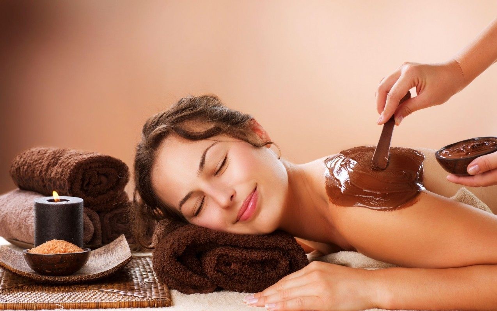
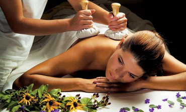
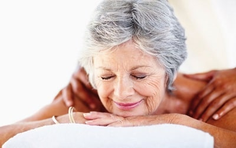
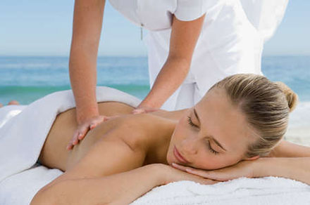
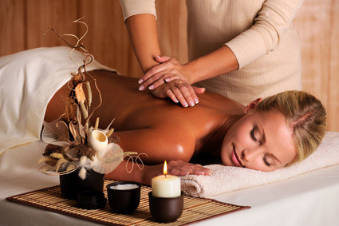

De Wellness en ontspanningsmassage is een van de bekendere massagevormen.Het is een massage waarbij het lichaam en de geest weer helemaal tot rust komen. Het doel van deze massage is dan ook om lichamelijk en geestelijk tot volledige ontspanning te komen. De ontspanningsmassage geeft je het gevoel van een complete ontspanning. De Wellness en ontspanningsmassage kan, net als heel veel massages, worden toegepast om mensen te verhelpen of te verlichten van verschillende klachten. Hierbij kan je denken aan psychische of lichamelijke klachten, als stress, hoge spierspanningen, storingen in de lichaamsbeleving, vermoeidheid, slapeloosheid en spierpijnen. De massage heeft een positieve invloed op het lichaam, zoals het bewegingsapparaat, de spijsvertering, de hormoonhuishouding en de lichaamsbeleving. Er wordt wel gezegd dat een regelmatige ontspanningsmassage een preventieve werking heeft op de algehele lichamelijke en geestelijke gezondheid. Hierdoor bescherm je jezelf tegen veelvoorkomende klachten, zoals een burn-out, slapeloosheid en oververmoeidheid. Vooral in deze tijd van drukte kan deze behandeling dan ook zeer goed zijn. Veel mensen hebben namelijk een stressvol leven en nemen nog nauwelijks de tijd voor zichzelf. Om lichamelijk en geestelijk in balans te blijven is het dan ook nodig om regelmatig een moment van ontspanning toe te passen. Een ontspanningsmassage is hier dan ook zeer geschikt voor.
Een nieuwe intensieve lichaamsmassage met oeroude Chinese uitgangspunten. Stimuleert de
bloedsomloop, vermindert cellulitis, lymfedrainage, helpt om toxines (giftige stoffen) af te
voeren, maar ook om krampen en triggerpoints (spierknopen) te verlichten. De massage werkt helend
tegen vermoeidheid en stress. Het lichaam is na de massage in een betere conditie.
Het resultaat:
een energieker, soepeler en krachtiger lichaam, waar de energie harmonieus door de energiebanen
stroomt.
Helende en ontspannende lichaamsmassage met warme stenen; een al eeuwenoude methode voor ontspanning en herstel. De combinatie van warmte en beweging heeft een positief effect op de bloedsomloop en het ademshalingssysteem. Het helpt de bloeddruk te normaliseren, geeft rust aan het zenuwstelsel, verlicht vermoeide spieren en vermindert spierspanningen. De warme stenen hebben een diepe kalmerende werking en neutraliseren spanning, stress en de negatieve energie in het lichaam. Overtollig vocht en afvalstoffen verdwijnen sneller uit de weefsels. Ondersteunt het herstel bij o.a. spierpijn, spierverstuikingen, spierspanningen, rugklachten, arthritis en fybromyalgie. Resultaat: het lichaam is beter bestand tegen stress, het verlicht (chronische) vermoeidheid, weerstandverhogend door versterking van het immuunsysteem op het fysieke en energetische vlak.
Full body massage met warme amandel- of kokosolie en natuurlijk chocola! Chocolade is een rijke
bron van vitaminen en mineralen én heeft hydraterende en verstevigende eigenschappen. Ook is het
een geweldige antioxidant. Chocolade bevordert de aanmaak van de zogenaamde "feel good" hormone
endorfine en serotonine. Werkt preventief tegen de vorming van cellulitis en zal de de algemene
huidconditie verbeteren.
Attentie: alleen als je niet allergisch bent voor chocola. Een chocolade
massage is een combinatie van een schoonheids- en ontspannings-behandeling, die de huid compleet
verwent en het verouderingsproces vertraagt. De massage zorgt er voor dat de huid en de zintuigen
zich ontspannen. De kalmerende werking van de cacao beïnvloed de huidstructuur. Ook verzacht,
voedt, hydrateert en beschermt het de huid. Een super heerlijke massage om je fijner te gaan
voelen en een "culinaire" manier om `smakelijk te verjeugdigen` en mooier te worden.

Duur: 90 minuten;
Prijs: 55 euro.
Deze unieke ayurvedische kruidenstempelmassage, met uitsluitend aangenaam geurende natuurlijke
producten, wordt uitgevoerd met warme, aangenaam zakjes , gevuld met kruiden. Het is een heel
aangename, ontspannende en kalmerende behandeling die energieherstellend is en diep doordringt in
huid en (spier-)weefsels. De geneeskrachtige kruiden werken antidepressief bij bijvoorbeeld
spirituele leegte en een onrustige geest. De combinatie van de hitte en de diepe massage geeft aan
het lichaam een krachtige stimulans om zich te zuiveren. Hinderlijke ballaststoffen die diep in de
weefsels genesteld zitten worden losgewoeld en uitgezweet. Kruidenstempel massage is geschikt voor
allerhande aandoeningen: spierpijnen, sportletsels, gewrichtsaandoeningen, osteoporose, artritis,
slijtage tussen de wervelschijven, cellulitis, neurologische aandoeningen, spanning, angst,
slapeloosheid Kruidenstempels is een exclusief door de Thailand ontwikkeld product. Het creëert
een optimaal gevoel van warmte en rust. Er kunnen aromatische oliën worden toegevoegd met een
therapeutisch werking, die passen bij uw individuele situatie/wensen. Door de stuctuur van de
zakjes ontstaat er een peeling-effect, dat de huid glad en stralend maakt.

Duur: 90 minuten;
Prijs: 55 euro.
Hoe ouder we worden, hoe minder beweging we krijgen! Minder bewegen is van invloed op de kwaliteit van het leven en de gezondheid. Studies hebben aangetoond dat massage direct het verouderingsproces positief kan beïnvloeden en het tempo hiervan kan vertragen. Massage heeft hiernaast een kalmerend effect op het lichaam en verlicht veel pijnen en kwalen waar senioren last van kunnen hebben.
Wat doet massage? houdt spieren en gewrichten langer soepel stimuleert een betere doorbloeding versterking van het afweersysteem verlaagt bloeddruk verbetering van nachtrust vermindert angst, depressie, spanning, stress door het vrijkomen van serotonine en oxytocine. verminder pijn door toename van serotine (hierdoor mogelijk minder gebruik van pijnstillers nodig) verbetert het bewust zijn van je lichaam. Je gaat daardoor rechter lopen en merkt eerder of je over je grenzen heen gaat. goed voor de huid. Houdt deze soepel.
Massage kan senioren met o.a. artrose, artritis, overgewicht, slapeloosheid en hoofdpijn helpen. Massage verbetert de bloedcirculatie en de stofwisseling, het vergroot de soepelheid van de gewrichten, reguleert de spierspanning, verbetert het geheugen en de mentale gesteldheid. Kortom: het kan maximaal bijdragen aan de kwaliteit van leven van senioren.
Bij gezondheidsklachten is het belangrijk om voorafgaand aan de massage afspraak met uw huisarts te overleggen.

Duur: 60 minuten; Prijs: 35 euro.
Duur: 90 minuten; Prijs: 40 euro.
Ritmische constante bewegingen als de golven van de oceaan, de natuurlijke harmonie in het paradijs waar geen mens ooit is geweest, het hypnotiserende gevoel van een magische dans!
Nieuw en uniek! Wave Touch Massage wordt voornamelijk uitgevoerd door de handen en onderarmen te bewegen in golvende langzame ritmische bewegingen. De vier basiselementen waarop de technieken van deze massage zijn gebeseerd zijn: ademen, dansen, aanraken en muziek.
Deze massage is gericht op het ontspannen van spieren en gewrichten en op versterking en verlichting. De massage heeft een genezend effect op het lymfesysteem, de bloedsomloop, de ademhaling, de spijsvertering en simuleert de spieren. Speciale aandacht wordt besteed aan de behandeling van de gewrichten. Ook ontspant bij deze massage het zenuwstelsel als `een brug tussen lichaam en ziel`. Deze massage is ook zeer effectief bij spanningen en depressive. Dankzij deze Wave Touch massage zul je je zowel geestelijk als lichamelijk heel comfortable voelen!

Duur: 90 minuten;
Prijs: 55 euro.
Een ontspanningsmassage kan zowel lichamelijk als geestelijk werken voor het behoud van een goede gezondheid. Uiteindelijk is de ontspanningsmassage bedoeld om los te komen van de dagelijkse stress in lichaam en geest, zodat het lichaam weer ervaart hoe het aanvoelt om ontspannen te zijn. Na een ontspanningsmassage is de ademhaling dieper, zijn spieren en pezen soepeler, wordt het lichaam beter doorbloed, wordt de afvoer van afvalstoffen gestimuleerd en komt er rust in het hoofd. Kortom uw lichaam is beter in balans.
Als u klachten heeft kunt u dit van te voren aangeven. Tijdens de massage wordt er aandacht besteed aan deze klachten, zodat u hier na een massage verlichting van heeft.
Er worden diverse technieken gecombineerd die spieren en weefsel losmaken waardoor lichaam en geest zich kunnen ontspannen. Het gebruik van olie, geur en muziek prikkelt de zintuigen.
Dit is een heel prettige massage voor mensen met een dynamische, actieve en spannende levensstijl.

Duur: 90 minuten;
Prijs: 40 euro.
Waarom worden boekweitzaden en zout gebruikt voor massage? Plantenzaden zijn een levende en harmonieuze biologische structuur en hebben een groot potentieel aan bio-energie, veilig te behandelen. Elk zaad in latente vorm bevat energie van enorme kracht, omdat een kleine korrel leven geeft aan de hele plant. Het feit is dat, bij interactie met de huid, de zaden ontwaken, het biologische veld dat door hen wordt uitgezonden (een zwak magnetisch veld) in wisselwerking staat met de correspondentiezones van de zieke organen en lichaamsdelen, vult met levensenergie en herstelt het energiepotentieel. Zout is een belangrijk kenmerk dat vaak wordt gebruikt in rituelen. Dit is de enige natuurlijke substantie die in zijn oorspronkelijke vorm wordt gebruikt en de energie van de aarde concentreert. De verbazingwekkende eigenschappen van zout zijn al sinds de oudheid bekend. Mensen vereerden haar en waardeerden haar als goud. Zout kan energie, informatie vastleggen, opslaan en overbrengen. Heeft een sterke energie die negatief kan absorberen. Het heeft reinigende eigenschappen, daarom wordt het gebruikt om negatieve energie te elimineren. Met deze procedure kunt u uw negatieve energie in zout "dumpen".